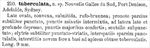

Click on images to enlarge
{kind=link}

Fig. 1. Paropsis tuberculata, description
Name
Paropsis tuberculata Chapuis, 1877
Corresponds to
= Trachymela castanea (Marsham, 1808)
= Ta26
Diagnosis and Notes
Blackburn (1897) deals with P. tuberculata as part of his 'subgroup iv' (i.e., those species without "strongly marked characters", and whose greatest height is considerably in front of the middle of the elytral margin). Within that group, he characterises it as:
A. Prothorax distinctly explanate at the sides [though he notes as an aside that the prothorax is only feebly explanate in this species];
B. Subhumeral depression present [this character is missing the opposite state in key];
CC. Elytral verrucae not as in C [i.e., not concolorous with the derm, not closely set in regular series and small];
D. The elytral verrucae normal (small and but little elevated);
E. prothorax widest close to base, very strongly narrowed in front.
Couplet C in Blackburn's key seeks to differentiate P. castanea (and catenata) from tuberculata, but does not do so at all effectively. Weise (1901) synonymises P. castanea with P. tuberculata without providing any justification. It is likely that he had access to and was comparing type specimens, and Chapuis' brief description certainly would fit castanea quite well.
Type specimen
Not examined.
Original description
Translation of original description (Figure 1) by ChatGPT, 04/2026:
Broadly ovate, convex, somewhat shining, reddish-brown. Pronotum rather sparsely and finely punctate, with minute punctures intermixed; toward the sides broadly and deeply depressed, with larger punctures crowded. Scutellum somewhat punctate. Elytra finely punctate-striate; interspaces sparsely punctulate; with nine intervals, almost from base to apex furnished with blunt tubercles. Length 9 mm. (Nouvelle Galles du Sud, Port Denison, Adelaide, Sydney)
References
Chapuis, F. 1877, "Synopsis des espèces du genre Paropsis", Annales de la Société Entomologique de Belgique (Comptes-rendus), vol. 20, 67-101 (page 94).
Weise, J. 1901, "Ein Beitrag zur Kenntniss von Paropsis Oliv.", Archiv für Naturgeschichte 67: 164-174 (page 168).
Copyright © 2026. All rights reserved.